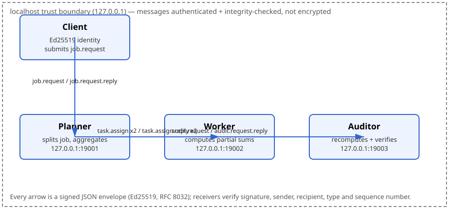

Three cooperating agents (planner, worker, auditor) plus a client,
communicating over authenticated localhost TCP channels. Every message
is a signed JSON envelope (Ed25519, RFC 8032). Pinned environment:
Python 3.12.3, standard library only, no third-party packages.
Methodology: docs/methodology.md.
Claims → evidence: docs/evidence-index.md.
All numbers are from the unedited logs in outputs/.
PASS — the mesh works end-to-end and rejects every tested attack.
Ed25519 validated against all five RFC 8032 §7.1 test vectors;
integration tests T1–T10 pass with 0 failures; 8 attack deliveries
rejected, 0 legitimate messages rejected. Benchmarks repeated twice
(run1, run2) with close agreement, and re-run a third time from a
fresh copy (outputs/fresh-clone-*.log).

| Vector | Key generation | Sign | Verify | Tampered signature rejected |
|---|---|---|---|---|
| TEST 1 (empty message) | PASS | PASS | PASS | PASS |
| TEST 2 (1 byte) | PASS | PASS | PASS | PASS |
| TEST 3 (2 bytes) | PASS | PASS | PASS | PASS |
| TEST 1024 (1023 bytes) | PASS | PASS | PASS | PASS |
| TEST SHA(abc) (64 bytes) | PASS | PASS | PASS | PASS |
| Random keypair round-trip | PASS | PASS | PASS | — |
Log: outputs/integration-tests.log.
| Test | Attack / case | Expected | Result |
|---|---|---|---|
| T1 | Normal cooperation, 3 jobs (n=1000, 1, 137) | Correct verified totals | PASS |
| T2 | Tampered payload (signature no longer matches) | Rejected bad_signature | PASS |
| T3 | Unknown key (attacker keypair not in registry) | Rejected unknown_sender | PASS |
| T4 | Identity spoofing (claims worker, signed with auditor key) | Rejected bad_signature | PASS |
| T5 | Replay of a valid envelope | Rejected stale_seq | PASS |
| T6 | Message delivered to the wrong agent | Rejected wrong_recipient | PASS |
| T7 | Registered agent sending a type it may not send | Rejected unauthorised_sender | PASS |
| T8 | Unknown agent name (mallory) | Rejected unknown_sender | PASS |
| T9 | Malformed (non-JSON) frame | Rejected malformed | PASS |
| T10 | Rejection accounting | Exactly 8 rejections, 0 legitimate rejected | PASS |
Log: outputs/integration-tests.log.
| Operation | Run1 | Run2 |
|---|---|---|
| Ed25519 sign | 163.9 ops/s, mean 6,100 µs/op | 172.8 ops/s, mean 5,786 µs/op |
| Ed25519 verify | 80.2 ops/s, mean 12,471 µs/op | 80.5 ops/s, mean 12,419 µs/op |
A job uses 8 signatures and 8 verifications, so the crypto floor for one job is about 8 × 6 ms + 8 × 12.5 ms ≈ 148 ms — matching the measured end-to-end p50 of ~151 ms. The reference is CPU-bound in pure-Python Ed25519, not in the network (localhost round-trips are sub-millisecond).
| Run1 | Run2 | |
|---|---|---|
| Mean | 158.63 ms | 155.46 ms |
| p50 | 151.46 ms | 150.93 ms |
| p95 | 190.96 ms | 179.27 ms |
| p99 | 220.46 ms | 212.05 ms |
| Min / max | 145.97 / 236.86 ms | 144.13 / 222.16 ms |
| Failures | 0 | 0 |
Raw data: outputs/latency.csv (run1),
outputs/bench-run2/latency.csv (run2).
| Concurrent clients | Run1 jobs/s | Run1 mean latency | Run2 jobs/s | Run2 mean latency | Failures |
|---|---|---|---|---|---|
| 1 | 6.30 | 158.40 ms | 6.26 | 159.46 ms | 0 |
| 5 | 6.21 | 794.93 ms | 6.20 | 797.57 ms | 0 |
| 10 | 6.11 | 1616.88 ms | 6.13 | 1608.57 ms | 0 |
Throughput is flat (~6.1–6.3 jobs/s) as concurrency rises: the
Python GIL serialises the pure-Python cryptography, so extra clients
only add queueing (mean latency grows 158 ms → 1,617 ms). This is a
property of the reference implementation, not of the protocol: a
production implementation with a native Ed25519 library would scale
with CPU cores. Raw data: outputs/throughput.csv.
scripts/clean_reproduce.sh copies the pack to a fresh
directory, re-runs the FULL test suite and the FULL benchmark suite
there, and copies the fresh logs into outputs/. See
outputs/fresh-clone-run.log for the comparison output,
outputs/fresh-clone-tests.log and
outputs/fresh-clone-benchmarks.log for the fresh logs.
| Check | Fresh clone | Shipped (run1) | Agreement |
|---|---|---|---|
| Ed25519 vectors | 5/5 PASS | 5/5 PASS | Identical |
| Integration tests | 0 failures | 0 failures | Identical |
| Latency p50 | 158.60 ms | 151.46 ms | +4.7% |
| Latency p95 | 199.21 ms | 190.96 ms | +4.3% |
| Throughput (1 client) | 6.21 jobs/s | 6.30 jobs/s | −1.4% |
| Throughput (10 clients) | 6.09 jobs/s | 6.11 jobs/s | −0.3% |
| Crypto sign / verify | 5,670 / 13,092 µs | 6,100 / 12,471 µs | −7.0% / +5.0% |
All fresh-clone numbers agree with the shipped run1 numbers within 7%; test outcomes are identical. The fresh-clone run is a third independent measurement (run1, run2, fresh clone) of the same code.
| ID | Severity | Finding | Mitigation / status |
|---|---|---|---|
| F1 | Low | Transport is plaintext localhost TCP — messages are authenticated but not encrypted; a local observer can read contents. | Accepted for this reference (127.0.0.1 only). Production: add TLS. |
| F2 | Low | Pure-Python Ed25519 is not constant-time; timing side channels possible in principle. | Accepted for this reference. Production: vetted native library. |
| F3 | Informational | Replay window of 128 + seen-set: replays inside the window are caught by the seen-set, below it by the age check. | Mitigated. Residual: a replay of an undelivered original inside the window is indistinguishable from first delivery. |
| F4 | Low | No key rotation or forward secrecy; a stolen private key impersonates the agent until restart. | Accepted: keys are fresh per process and never written to disk. |
| F5 | Informational | Sequence state resets on restart, so pre-restart captures could be replayed after it. | Accepted and disclosed. Production: persist sequence state or rotate keys on restart. |
| F6 | Informational | No rate limiting; only the 1 MiB frame cap and 10 s socket timeout bound abuse. | Accepted for this reference (localhost, trusted peers). |
| F7 | Low | A strictly-increasing sequence check rejected legitimate out-of-order messages under concurrency (found by benchmarks: 80/150 failures at 5 clients, 219/300 at 10, all stale_seq). | Fixed: sliding window of 128 + seen-set; all levels now 0 failures. |
| F8 | Informational | The registry is a shared in-process dictionary; any code calling Mesh.add_client can register an identity. | Accepted for this reference. Production: signed key directory. |
Full threat model: docs/threat-model.md.
verified=true. The audit step catches a malicious worker,
not a malicious auditor.Reproduce: scripts/run_tests.sh,
scripts/run_benchmarks.sh run1,
scripts/clean_reproduce.sh,
scripts/verify_digests.sh. Run manifest:
outputs/run-manifest.md.